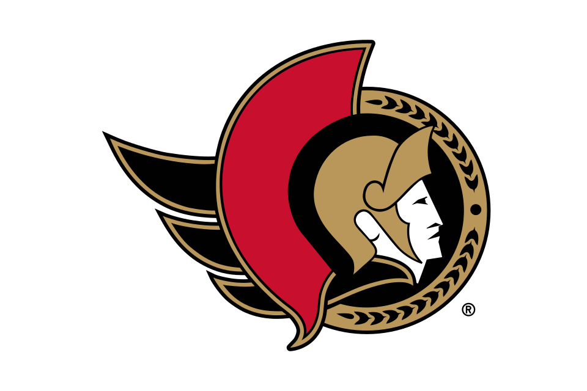

Ottawa Senators
Atlantic · Eastern Conference · 25 headlines in the last 30 days
Latest Senators news
25 stories


Senators Erase Late Four-Goal Deficit In Wild Comeback, Fall 6-5 to Kings in Overtime
Down 5-1 in the third period and playing with just nine forwards, the Senators staged a late, four-goal comeback to salvage a point.


Kings beat Senators 6-5 in OT after blowing a 4-goal lead in the 3rd period
LOS ANGLES (AP) — Quinton Byfield scored at 3:37 of overtime and the Los Angeles Kings beat the Ottawa Senators 6-5 on Thursday night after blowing a four-goal lead in the third period.Byfield beat goalie Samuel Ersson with a snap shot from the high slot, with Drew Doughty picking up his third assist of the night on…

Ottawa's Hayden Hodgson ejected after boarding hit on Kings' Brandt Clarke
LOS ANGELES (AP) — Ottawa Senators forward Hayden Hodgson received a game misconduct and major penalty for boarding Los Angeles defenseman Brandt Clarke in the Kings' 6-5 overtime victory Thursday night.Hodgson took a run at Clarke, charging in at 21 mph according to the game broadcast.

Senators Look To Bounce Back In Los Angeles As Johansson Gets Third Straight Start
Thomas Chabot returns from injury as the Senators play in Los Angeles Thursday night.

Ottawa Senators Lose Another Player To A Waiver Claim
With Thomas Chabot returning from injury in Ottawa, the Minnesota Wild claimed Sens defenseman Cameron Crotty off waivers on Thursday.
Minnesota Wild Claim Defenseman Off Waivers From Senators
The Minnesota Wild have claimed defenseman Cameron Crotty off waivers from the Ottawa Senators.


Senators Place Defenseman On Waivers To Make Room For Probable Chabot Return
If Thomas Chabot returns on Thursday night, it would put the Sens' blue line at full strength for the first time this season.

Adin Hill Comes Up Big as Golden Knights Snap Losing Streak Against Senators
Adin Hill’s clutch saves and Raphael Lavoie’s milestone first NHL goal propelled Vegas past Ottawa, overcoming a sudden goaltending injury to halt a three-game skid at home.


Flying Butterfly: 3 Observations as Golden Knights Snap Losing Streak With Gritty Win Against Senators
Las Vegas, N.V.– When a team is on a three-game losing streak, they often need a big moment to swing momentum and turn things around. It could be anything: a fight, a herculean individual effort that leads to a goal, or even a big blocked shot.

Lavoie’s First NHL Goal, Hill’s Big Night Lift Golden Knights Past Ottawa
Raphael Lavoie scored his first NHL goal, Adin Hill made 25 saves and the Golden Knights beat Ottawa 4-1 to snap a three-game skid. Lavoie went from an expected healthy scratch to the game-winning scorer while Hill delivered timely saves after Carter Hart was injured during the team's morning skate.

Senators Suffer Yet Another Injury In Tight 4-1 Loss In Vegas
Despite plenty of Grade A chances, the chips didn't fall the Senators' way in Vegas on Tuesday night.

Raphael Lavoie scores his 1st NHL goal as the Golden Knights beat the Senators 4-1
LAS VEGAS (AP) — Raphael Lavoie scored his first career goal, a tap-in eight minutes into the third period to put Vegas ahead for good in its 4-1 victory over the Ottawa Senators on Tuesday night, ending the Golden Knights' three-game losing streak.Braeden Bowman scored a power-play goal for the Golden Knights, and…

Team Owner Reveals That Brady Tkachuk's In-Game Chirp Motivated The Senators Last Week
Senators owner Michael Andlauer revealed on Tuesday that after Brady Tkachuk scored the opening goal last week, he said something to the Sens bench that motivated their comeback.

Johansson Gets Second Straight Start As Senators Open Five-Game Road Trip In Vegas
The Senators begin a road trip in Vegas as Jonas Johansson, a recent call up from Belleville, gets his second straight start.
Keys to the Fortress: Golden Knights’ New Lines and Game Notes for Matchup Against Senators
The Vegas Golden Knights are on a three-game skid and will look to get back into the win column on Tuesday. They host the Ottawa Senators at T-Mobile Arena.

Weekly Cupcakes: Brady receives a NSFW welcome in Ottawa
Colorado Avalanche News News Around the League
Golden Knights host the Senators on losing streak
Ottawa Senators (8-4, in the Atlantic Division) vs. Vegas Golden Knights (8-4-1, in the Pacific Division)Paradise, Nevada; Tuesday, 10 p.

Rangers Unable to Overcome Slow Start in Loss to Senators
The New York Rangers couldn’t overcome their blunderous start on Saturday night, leading to a 7-4 loss to the Ottawa Senators.